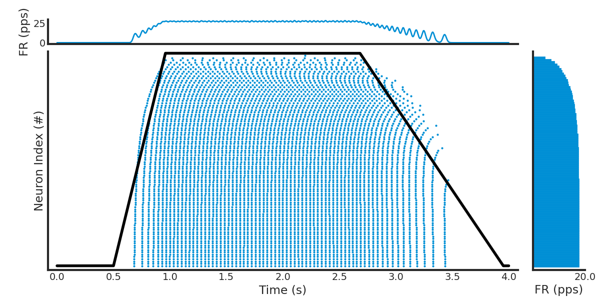

Note
Go to the end to download the full example code.
Spike Train Generation with Current Injection#
This example demonstrates how to simulate spike trains in a population of alpha motor neurons using current injection.
Two complementary workflows are presented:
Manual step-by-step workflow — explicitly walks through each stage of the NEURON simulation pipeline. This workflow is intended to clarify the underlying mechanisms.
Utility-function workflow — uses the high-level
inject_currents_and_simulate_spike_trains()function for routine simulations.
Both workflows yield identical results; the manual version is provided purely for explanatory purposes.
Import Libraries#
Important
In MyoGen all random number generation is handled by the RANDOM_GENERATOR object.
This object is a wrapper around the numpy.random module and is used to generate random numbers.
It is intended to be used with the following API:
from myogen import simulator, RANDOM_GENERATOR
To change the default seed, use set_random_seed():
from myogen import set_random_seed
set_random_seed(42)
from pathlib import Path
import elephant
import joblib
import neuron
import numpy as np
import quantities as pq
import seaborn as sns
from matplotlib import pyplot as plt
from neo import Block, Segment, SpikeTrain
from neuron import h
from viziphant.rasterplot import rasterplot_rates
from myogen import RANDOM_GENERATOR
from myogen.simulator.neuron.populations import AlphaMN__Pool
from myogen.utils.currents import create_trapezoid_current
from myogen.utils.neuron.inject_currents_into_populations import (
inject_currents_and_simulate_spike_trains,
inject_currents_into_populations,
)
from myogen.utils.nmodl import load_nmodl_mechanisms
plt.style.use("fivethirtyeight")
Create Motor Neuron Populations (Pools)#
In MyoGen a population of cells (e.g. motor neurons) is represented by a Population class and available in the myogen.simulator.neuron.populations module.
A population can easily be created by specifying the number of cells. Plausible default parameters are already set.
For a motor neuron population (refferred to as motor pool), we can use the AlphaMN__Pool class.
This class can also use the recruitment thresholds generated in the previous example to distribute the motor units properties in a physiologically plausible manner.
Important
These Population classes are custom build and use therefore custom NMODL mechanisms.
To use them, the NMODL mechanisms need to be loaded first using the load_nmodl_mechanisms() function.
To showcase MyoGen’s capabilities, we will create two different motor neuron pools with identical properties but different input currents.
load_nmodl_mechanisms()
save_path = Path("./results")
save_path.mkdir(exist_ok=True)
recruitment_thresholds = joblib.load(save_path / "thresholds.pkl")
n_pools = 2
motor_neuron_pools = [
AlphaMN__Pool(recruitment_thresholds__array=recruitment_thresholds) for _ in range(n_pools)
]
Create Input Currents#
To drive the motor units, we use a common input current profile.
In this example, we use a trapezoid-shaped input current which is generated using the create_trapezoid_current() function.
Note
More convenient functions for generating input current profiles are available in the myogen.utils.currents module.
Note
The generated input current is an instance of the neo.core.AnalogSignal class from the neo package.
timestep = 0.05 * pq.ms
simulation_time = 4000 * pq.ms
rise_time_ms = list(RANDOM_GENERATOR.uniform(100, 500, size=n_pools)) * pq.ms
plateau_time_ms = list(RANDOM_GENERATOR.uniform(1000, 2000, size=n_pools)) * pq.ms
fall_time_ms = list(RANDOM_GENERATOR.uniform(1000, 2000, size=n_pools)) * pq.ms
input_current__AnalogSignal = create_trapezoid_current(
n_pools,
int(simulation_time / timestep),
timestep,
amplitudes__nA=[15.0 * pq.nA] * n_pools,
rise_times__ms=rise_time_ms,
plateau_times__ms=plateau_time_ms,
fall_times__ms=fall_time_ms,
delays__ms=500.0 * pq.ms,
)
print(
f"Input current signal shape: {input_current__AnalogSignal.shape}\nClass: {input_current__AnalogSignal.__class__}"
)
# Save input current signal for later analysis
joblib.dump(input_current__AnalogSignal, save_path / "input_current__AnalogSignal.pkl")
Input current signal shape: (80000, 2)
Class: <class 'neo.core.analogsignal.AnalogSignal'>
['results/input_current__AnalogSignal.pkl']
Manual Simulation Approach - Step by Step#
Before showing the convenient utility function, let’s understand what happens under the hood by implementing the simulation pipeline manually. This approach gives you full control and helps understand NEURON’s mechanisms.
# Step 1: Set up current injection manually
# =========================================
# We need to inject time-varying currents into each motor neuron.
# This uses NEURON's :class:`neuron.h.IClamp` (current clamp) mechanism with :meth:`neuron.h.Vector.play`.
inject_currents_into_populations(motor_neuron_pools, input_current__AnalogSignal)
# Step 2: Set up spike recording manually
# =======================================
# For each neuron, we create a :class:`neuron.h.NetCon` (network connection) object that detects
# spikes when the membrane voltage crosses a threshold, and records spike times.
spike_detection_threshold__mV = 50.0 * pq.mV
simulation_time__ms = input_current__AnalogSignal.t_stop.rescale(pq.ms)
spike_recorders = []
for pool_idx, pool in enumerate(motor_neuron_pools):
pool_spike_recorders = []
for cell in pool:
# Create a vector to record spike times
spike_recorder = h.Vector()
# Create NetCon object: monitors voltage at soma(0.5) and records spikes
# NetCon(source, target, threshold, delay, weight)
# source: cell.soma(0.5)._ref_v (membrane voltage reference)
# target: None (no post-synaptic target, just recording)
nc = h.NetCon(cell.soma(0.5)._ref_v, None, sec=cell.soma)
nc.threshold = spike_detection_threshold__mV # Spike detection threshold
nc.record(spike_recorder) # Record spike times into vector
pool_spike_recorders.append(spike_recorder)
spike_recorders.append(pool_spike_recorders)
# Step 3: Initialize voltages and run simulation
# ==============================================
# Before running, we need to initialize membrane voltages to physiological values.
#
# .. note:: For this MyoGen populations provide the ``get_initialization_data()`` method.
# This returns the sections and their initial voltages.
# Initialize each neuron's membrane voltage to its resting potential
for pool in motor_neuron_pools:
for section, voltage in zip(*pool.get_initialization_data()):
section.v = voltage
# Initialize NEURON's internal state and run the simulation
h.finitialize() # Initialize all mechanisms and variables
neuron.run(simulation_time__ms)
# Step 4: Convert recorded data to :class:`neo.core.Block` format
# ==================================================================
# The spike times are now stored in NEURON vectors. We convert them to
# the standardized :class:`neo.core.Block` format for analysis and compatibility.
spike_train__Block_manual = Block(name="Manual Simulation Results")
for pool_idx, pool_spike_recorders in enumerate(spike_recorders):
# Create a segment for this motor unit pool
segment = Segment(name=f"Pool {pool_idx}")
# Convert each neuron's spike times to a :class:`neo.core.SpikeTrain` object
segment.spiketrains = []
for neuron_idx, spike_recorder in enumerate(pool_spike_recorders):
# Convert NEURON vector to numpy array and add units
spike_times = (spike_recorder.as_numpy() * pq.ms).rescale(pq.s)
# Create :class:`neo.core.SpikeTrain` object with metadata
spiketrain = SpikeTrain(
spike_times,
t_stop=simulation_time__ms.rescale(pq.s),
sampling_rate=(1 / (h.dt * pq.ms)).rescale(pq.Hz),
sampling_period=(h.dt * pq.ms).rescale(pq.s),
name=str(neuron_idx),
description=f"Pool {pool_idx}, Neuron {neuron_idx}",
)
segment.spiketrains.append(spiketrain)
spike_train__Block_manual.segments.append(segment)
joblib.dump(spike_train__Block_manual, save_path / "spike_train__Block_manual.pkl")
['results/spike_train__Block_manual.pkl']
Convenient Utility Function Approach#
The manual approach above shows you exactly what happens during simulation.
However, since this is a common task, MyoGen provides the inject_currents_and_simulate_spike_trains()
utility function that encapsulates all these steps in a single call.
This is the recommended approach for routine simulations, while the manual approach is useful when you need custom spike detection, specialized recording, or want to understand the underlying mechanisms.
# Run the same simulation using the utility function
spike_train__Block = inject_currents_and_simulate_spike_trains(
populations=motor_neuron_pools,
input_current__AnalogSignal=input_current__AnalogSignal,
spike_detection_thresholds__mV=50 * pq.mV,
)
joblib.dump(spike_train__Block, save_path / "spike_train__Block_utility.pkl")
# Compare the two approaches
print("\nComparison of results:")
print(f"Manual approach: {len(spike_train__Block_manual.segments)} segments")
print(f"Utility approach: {len(spike_train__Block.segments)} segments")
# Verify they produce similar results (spike counts should be identical)
for i, (manual_seg, utility_seg) in enumerate(
zip(spike_train__Block_manual.segments, spike_train__Block.segments)
):
manual_spikes = sum(len(st) for st in manual_seg.spiketrains)
utility_spikes = sum(len(st) for st in utility_seg.spiketrains)
print(f"Pool {i}: Manual={manual_spikes} spikes, Utility={utility_spikes} spikes")
Comparison of results:
Manual approach: 2 segments
Utility approach: 2 segments
Pool 0: Manual=6061 spikes, Utility=6061 spikes
Pool 1: Manual=5577 spikes, Utility=5577 spikes
Calculate and Display Statistics#
It might be of interest to calculate the firing rates of the motor units.
Note
The firing rates are calculated as the number of spikes divided by the time in which each MU was active. The simulation time is in milliseconds, so we need to convert it to seconds.
firing_rates = [
np.array(
[
elephant.statistics.mean_firing_rate(st__s.time_slice(st__s.min(), st__s.max()))
for st__s in spike_train__segment.spiketrains
if len(st__s) > 0
]
)
for spike_train__segment in spike_train__Block.segments
]
print("Firing rate statistics:")
for pool_idx, firing_rates_per_pool in enumerate(firing_rates):
active_neurons = np.sum(firing_rates_per_pool > 0)
if len(firing_rates_per_pool) > 0 and np.sum(firing_rates_per_pool > 0) > 0:
mean_rate = np.mean(firing_rates_per_pool[firing_rates_per_pool > 0])
max_rate = np.max(firing_rates_per_pool)
else:
mean_rate = 0.0
max_rate = 0.0
print(
f" Pool {pool_idx + 1}: {active_neurons}/{len(recruitment_thresholds)} active neurons, "
f"mean rate: {mean_rate:.1f} Hz, max rate: {max_rate:.1f} Hz"
)
Firing rate statistics:
Pool 1: 94/100 active neurons, mean rate: inf Hz, max rate: inf Hz
Pool 2: 94/100 active neurons, mean rate: inf Hz, max rate: inf Hz
Visualize Spike Trains#
)
spike_train_list = list(spike_train__Block.segments[0].spiketrains)
active_spiketrains = [st for st in spike_train_list if len(st) > 0]
ax, axhistx, axhisty = rasterplot_rates(spike_train_list, filter_function=lambda st: len(st) > 0)
ax.plot(
input_current__AnalogSignal.times,
input_current__AnalogSignal.magnitude.T[0]
/ input_current__AnalogSignal.magnitude.T[0].max()
* len(active_spiketrains),
color="black",
)
axhisty.set_xlabel("FR (pps)")
# Clear the auto-generated histogram and add custom KDE using elephant because it looks better
axhistx.clear()
if len(active_spiketrains) > 0:
from elephant.kernels import GaussianKernel
rate = elephant.statistics.instantaneous_rate(
active_spiketrains,
sampling_period=(h.dt * pq.ms).rescale(pq.s),
kernel=GaussianKernel(sigma=15 * pq.ms), # type: ignore
)
axhistx.plot(
rate.times.rescale(pq.s).magnitude,
rate.magnitude.mean(axis=1).flatten(),
linewidth=2,
)
axhistx.set_ylabel("FR (pps)")
axhistx.set_xlim(ax.get_xlim()) # Match x-axis with raster plot
ax.set_ylabel("Neuron Index (#)")
ax.set_xlabel("Time (s)")
# remove top and right spines for cleaner look
sns.despine(ax=ax)
# Make figure bigger with more white space at borders
fig = plt.gcf()
fig.set_size_inches(12, 6)
# Add whitespace between axes (manually adjust positions since rasterplot_rates uses absolute positioning)
gap = 0.025 # Gap size between axes
bottom_margin = 0.03 # Margin from bottom
ax_pos = ax.get_position()
axhistx_pos = axhistx.get_position()
axhisty_pos = axhisty.get_position()
# Raise ax and axhisty from bottom, move top histogram up and right histogram right to create gaps
ax.set_position([ax_pos.x0, ax_pos.y0 + bottom_margin, ax_pos.width, ax_pos.height])
axhistx.set_position(
[
axhistx_pos.x0,
axhistx_pos.y0 + gap + bottom_margin,
axhistx_pos.width,
axhistx_pos.height,
]
)
axhisty.set_position(
[
axhisty_pos.x0 + gap,
axhisty_pos.y0 + bottom_margin,
axhisty_pos.width,
axhisty_pos.height,
]
)
plt.show()

Total running time of the script: (0 minutes 37.107 seconds)